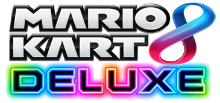
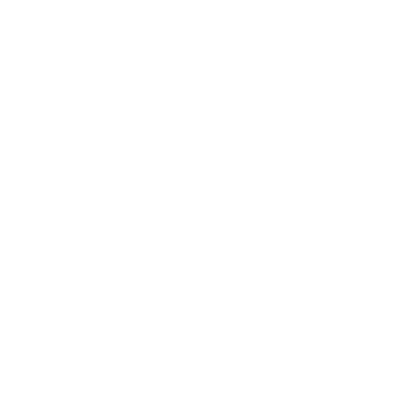
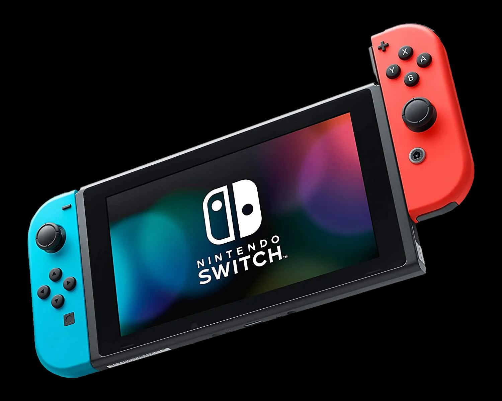
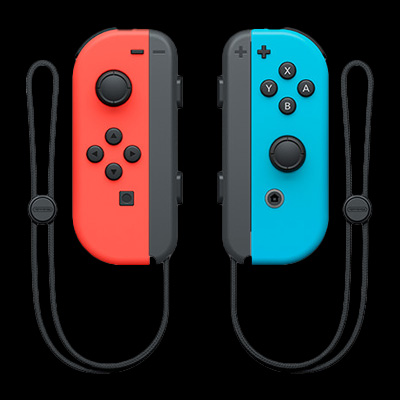
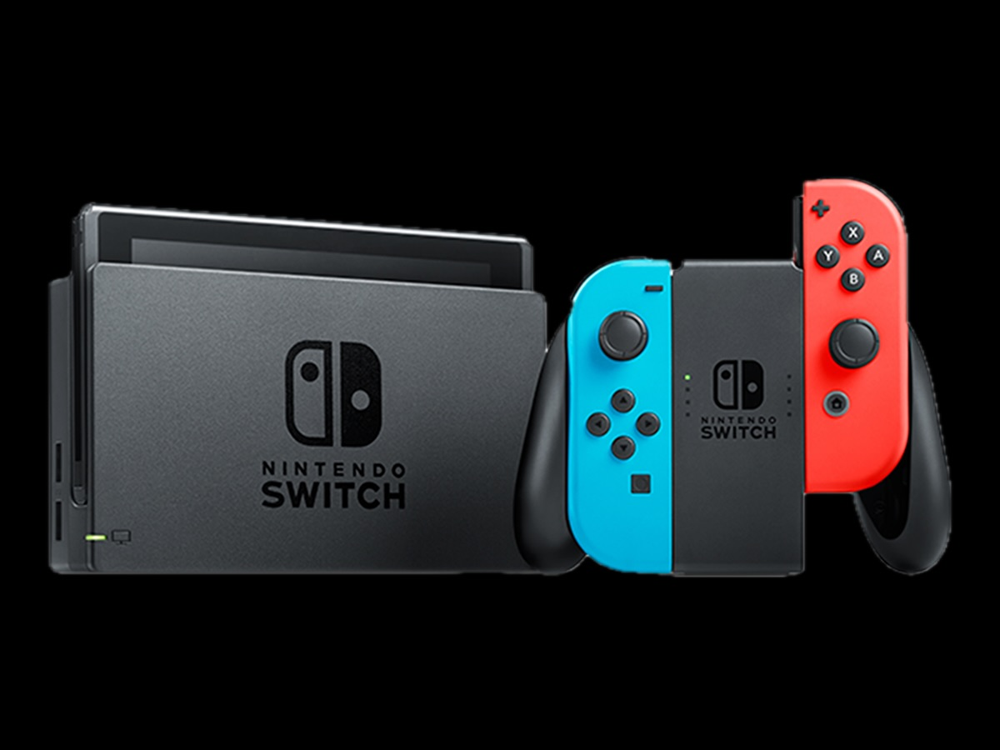

Introduction
First Super Mario Bros game was released in 1985. As one of the most popular games in the world, Mario Kart 8 Deluxe was released by Nintendo in 2017. It features exciting racing everywhere that goes beyond imagination, even underwater and in the air. Among all the racing tracks, players can also experience some anti-gravity driving areas where you can drive on the walls or even on ceilings.

Mario's World
Hello! I'm Mario! I was born on July 9, 1981, also known as the Mario Day!
I have a brother called Luigi, and we explore the Mushroom Kingdom together!
Bowser is the main villain in the world... who turns everything into trouble...
Luckily, I have my loyal dinosaur friend Yoshi! He always helps me out on the way!
Don't forget my biggest adventure -- rescuing the pretty and kind Princess Peach!!!
See you guys in the races!

Equipments
Get all the equipments and play Mario Kart with you family and friends!



Nintendo Switch
If you are enjoying this game with a friend, connect it to TV through HDMI input and stand up and enjoy.
Joy-Cons
Each player holds one single joy-con horizontally. And hang the lanyard around your wrist to help you control it.
Console
Use the console to dock the Switch and connect it to your TV screen for a larger-than-life racing experience.
More...
Click the following cards to learn more about them!
Characters
Players are able to choose their favourite among a range of characters, in which each has a unique driving style.
Courses
A number of courses placed in different Cups are provided in Mario Kart, which are inspired from various Nintendo games.
Items
Powerful items can be collected on the way to help the player and obstruct the opponents throughout the race.
Battles
There are four different play modes to be chosen, allowing players to have a nevelty experience.
Strategies to Win
Go Ahead with "Rocket Start"
It is a trick to pay attention to the "3, 2, 1" countdown before the race starts. During the countdown, if you start pressing down the A button on "2", you can get a Rocket Start that lets you sprint at the beginning.
Using Drifts to Take Sharp Corners
If you keep pressing the R Button and turn while holding A, you will perform a Drift. This helps you maintain speed and cut the corner from the inside, reducing your travel distance.
Grabbing More Items
Item Boxes with question marks are placed across the tracks. Touching them gives you helpful items. Try grabbing 2 at once to improve your chances of winning.
Think you're ready for the race? Take the quiz!
Let's Go!